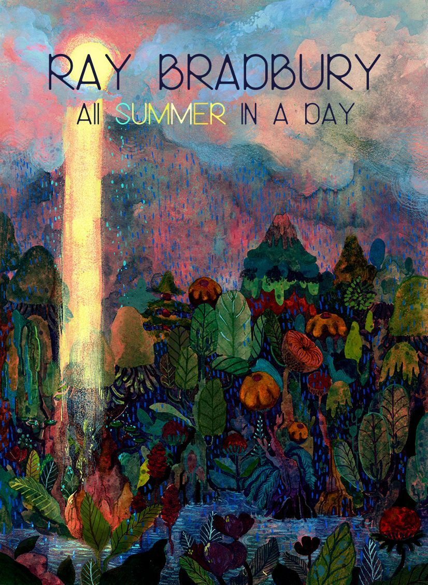
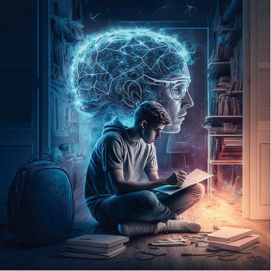
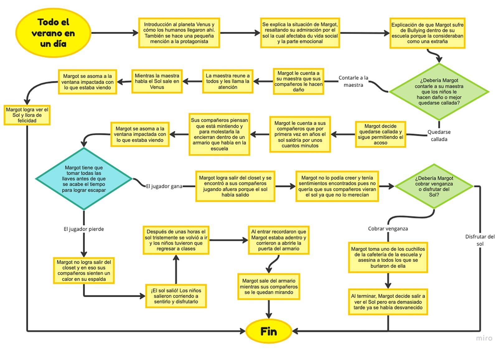

"Todo el Verano en un Día" de Ray Bradbury: Una Odisea Emocional bajo la Lluvia Eterna
En el distante planeta Venus, las lluvias torrenciales son tan constantes que los niños locales apenas recuerdan la última vez que vieron el sol. Entre ellos se encuentra Margot, una niña terrestre que sí recuerda, debido a que vivió en la Tierra antes de mudarse a Venus. Su memoria del sol la convierte en una figura marginada entre sus compañeros, quienes no solo no recuerdan el sol, sino que anhelan desesperadamente experimentarlo.
La historia se desarrolla en el día en que se espera que el sol aparezca durante unas breves horas. Los niños, con la esperanza de ver algo que nunca han presenciado, se vuelven tumultuosos y ansiosos. Sin embargo, la situación se complica cuando la frustración y celos hacia Margot culminan en un giro inesperado y conmovedor.
"Todo el Verano en un Día" explora temas de nostalgia, pérdida, y la naturaleza efímera de la felicidad. La narrativa de Bradbury captura la intensidad emocional de la infancia, la crueldad, y la belleza efímera de los momentos especiales.
En nuestra adaptación gráfica, damos vida a esta historia a través de ilustraciones evocadoras y un enfoque visual que busca capturar la esencia única de la prosa de Bradbury. Únete a nosotros en un viaje a través de este mundo de emociones complejas y descubre cómo la historia de "Todo el Verano en un Día" resuena más allá de las páginas, dejando una impresión duradera en aquellos que la experimentan.
Grano a grano se crea una montaña

La secuencia de imágenes tomó forma a través de un meticuloso análisis de la historia original de "Todo el Verano en un Día" de Ray Bradbury. Cada elemento narrativo fue desentrañado y reconstruido visualmente para capturar la esencia emocional de la trama. Se exploraron distintas perspectivas y enfoques para asegurar que la novela gráfica transmitiera la intensidad y profundidad de la historia de Bradbury.

Las ilustraciones, clave para dar vida a la narrativa, fueron creadas con un toque vanguardista. Aquí, la inteligencia artificial se convirtió en nuestra aliada creativa. Utilizando algoritmos avanzados, las ilustraciones fueron generadas para complementar la narrativa de manera única y evocativa.

La protagonista, guiada por la misma esencia emocional de la narrativa, se encuentra atrapada en un misterioso armario. El objetivo es claro: recolectar un número específico de llaves para desbloquear el camino hacia la libertad. Cada llave recopilada desentraña un fragmento más profundo de la historia, creando una experiencia de juego inmersiva que refleja la lucha por la luz en medio de la oscuridad, tal como se vive en la novela gráfica
Este proceso creativo no solo fue un ejercicio de reinterpretación artística, sino también un testimonio de cómo la combinación de narrativa, tecnología y creatividad puede dar lugar a una experiencia única e impactante.
El resultado de todo: Aventura gráfica
En el culmen de nuestro esfuerzo creativo, nos complace presentar la culminación de esta odisea visual. La novela gráfica y el juego interactivo convergen para ofrecer una experiencia completa y envolvente que va más allá de las páginas y pantallas. Cada trazo, cada algoritmo, y cada llave recolectada se convierten en piezas cruciales de un rompecabezas emocional que resuena con la esencia misma de "Todo el Verano en un Día".